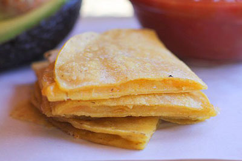

My Favorite Food!

Three Ingredient Quesadilla
- Two corn tortillas
- One slice of cheddar or pepper jack cheese
- Small bunch spinach
Optional:
- Sour cream
- Hot Sauce
Directions
- Place torilla on pre heated non stick pan.
- Put desired cheese on the tortilla. Make sure Cheese fits inside the margins of the tortilla.
- Place spinach on top.
- Once you see the cheese melt a bit, place the second torilla on top of the spinach.
- Flip
- Let cook for one more minute
- Plate and serve with sour cream and hot sauce if desired
For that extra special touch, use homemade tortillas! Find a simple recipe here.